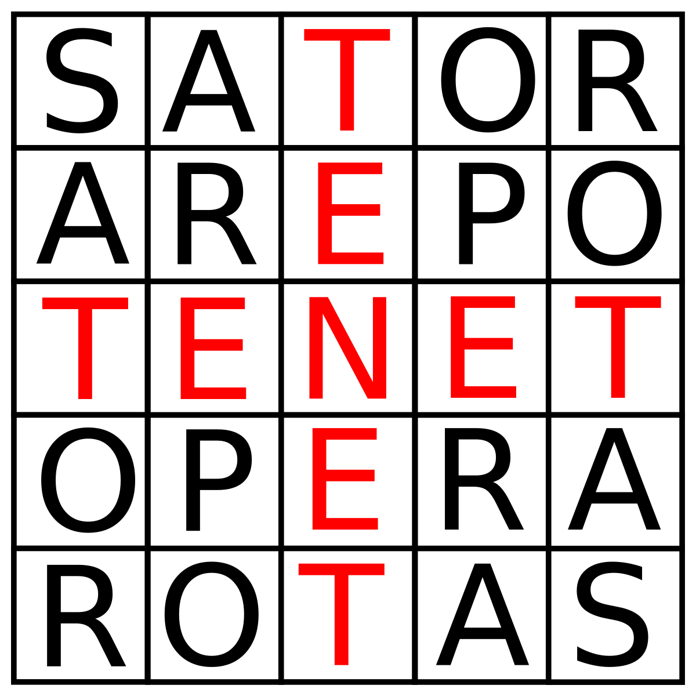

Tenet (2020)
6

Armed with only one word, Tenet, and fighting for the survival of the entire world, a Protagonist journeys through a twilight world of international espionage on a mission that will unfold in something beyond real time.
Director: Christopher Nolan
Writer: Christopher Nolan
Stars: John David Washington, Robert Pattinson, Elizabeth Debicki
Country: United States
Produced and Distributed by: Warner Bros. Pictures
Tenet is a massive spectacle that pushes the boundaries of storytelling, yet fails to land any satisfying human emotion. Similar to other Nolan blockbusters, Tenet is a complete and total mindfuck, excuse me, puzzle-box film. It has the monumental title of being one of the few films actually released in theatres during the Covid pandemic. This is made more insane by its enormous $200 million budget, which is the most Nolan has ever had to work with. The film grossed around $400 million, but due to Warner Bros' extensive marketing, the film is still expected to have lost $100 million. Critically, the film was received pretty well though it got nowhere near the knockout reviews Nolan usually achieves. Tenet has been largly regarded as Nolan's take on James bond, and to a degree thats fair, though I don't imagine many Bond fans would be satisfied with it.
Tenet is a spectacle picture that delivers on some of the most visceral visuals and effects I've ever seen. Honestly, my jaw was on the floor for most of this film. And its not just the massive practical set pieces, like the plane sequence, but also the mindbending hallway fight scenes I'm just in total awe of how they captured. I think Nolan is intentionally trying to make an action movie here that impresses, regardless of whether you follow the plot or not. One of the early lines is straight up: "Don't try to understand it. Feel it." Overall, the action in here is stellar with the opening sequence being a particular favorite of mine.
A couple of minor gripes with the action. I do wish guns had a bit more of a punch to them. In the opening opera sequence its hard to tell anyone is even being shot, but my guess is this is Nolan trying to avoid an R-rating. And second, the final large scale battle sequence, while incredibly ambitious, is really hard to follow. Like do we see a single bad guy that entire sequence? Not being able to see who our heros are firing at, and having no frame of reference of what is going on in the fight is really frustrating considering the scale of the engagement. To me it just feels like the good guys are running forward and shooting constantly. There is no tension as to what is happening in the battle and to me the whole thing falls disappointingly flat.
Storywise, Tenet is as confusing and mindbending as Inception and Memento combined. I feel like I understood the plot of this film quite well, even on my first viewing. Of course my second time around I was able to pick up a little more here and there, as well as relax a bit and enjoy what was actually happening, rather than straining to follow everything. The "puzzle" of the film is quite cool, and definitely leads to some really cool action pieces. I feel this was Nolan's focus with Tenet. He wanted a really cool, mindbending action flick. And I also think he succeeded.
However, I think he missed on both the human aspect of the film. John David Washington is fantastic in this film. In my opinion, everyone is, including Branagh who got some flak for his portrayal. Instead, it's the character-building that fails. The only thing I know about the Protagonist, is that he likes Diet Coke when on a mission. The audience has no idea who he is, how he ended up on this insane world saving mission, or why he is so special in the first place. Compare this to Cobb in Inception who had a family he was fighting to get back to, which drove his actions through the film and brought me to root for him. The relationship between McConaughey and his daughter in Interstellar gutted me. The rivalry between Bale and Jackman in The Prestige kept me glued to the screen, fighting myself on who I wanted to succeed more. Tenet comes nowhere near these character relationships. Sure, JDW and Pattinson develop as friendship over two and a half hours, but when they finally part ways, I really did not care that much. Same goes for JDW and Debicki. If anything, I found the most engaging relationship to be between Branagh and his wife and their resentment bordering hatred for each other. Overall, I felt no strong character connection in this film which is really not good considering the amount of time it had to make me care.
And unfortunately the story continues to disappoint. Nolan is a master of the puzzle box film, but I feel he goes too far here. Not that it is too confusing, but rather that he emphasized the cool factor so much so that it begins to have no weight. Like the entire film being a temporal pincer is incredibly impressive. But then you start to pick some of these things apart and I begin to wonder, did that really add anything? For example, the Sator square that the film gets its name from. This cube and the way it fits into both the plot and theme of the film is spectacular, until you think Arepo? Rotas? Sure they were both in the film, but they really had nothing to do with anything. Its like Nolan went "oh shit, we need to randomly cram these in here to make the square make sense." And I feel this with other "cool" details like how the team at the end of the film has a forward Ten and backwards Ten minutes to complete their mission, aka TeneT. Sure its cool, but totally superfluous to the quality of the film, and really doesn't add much.

Summarizing the rest of my thoughts because this review is already way too long. The score is phenomenal and I couldn't be more satisfied with it. The editing is offly jumpy and was surprisingly distracting for a Nolan flick. My first time watching in the theatre background noises were so bad I missed many crucial conversations, but with the Imax Blu-ray I never ran into that problem, so I land neutral on the sound mixing.
Overall, I feel like this film should have been three hours. It too heavily emphasizes the incredible action and leaves everything else off to the side. I want more character development in a film this heavy with technical details. And even if you were to completely avoid the plot, while the action is incredible, I need some kind of emotional anchor to remain invested for two and a half hours. I love the action in this film so much that I really wanted to give it a better review, but I just can't forgive all of the wasted potential.